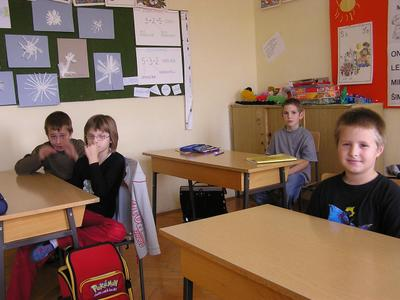

Sandi Daus explained to us that "Fui de coa" means "Go away from here," and Mateo Jurman remembered that when they speak on the cell phone, the speaker may ask the other speaker "Iuv ești" , which means "Where are you"
 Šušnjevica - The name Šušnjevica, where there is one of the smallest Istrian schools with only eight pupils in the first and second class, has the root in the old Istro-Romanian dialect. "Su" means "On," so the total name means "Those who live above the plowed field". Only about 150 people speak this interesting language, and our friends, students of the local elementary school "Ivan Goran Kovacević" from Čepić, know a few phrases, which they heard from their nonos or nonas. Sandi Daus told us that when the older people worked in the field, they use to yelled: "Fui de coa" , which means "Go awaz from here," and Mateo Jurman remembered that when talking on the cell phone people may say "Iuv ești".
The younger generation in Šušnjevica is better able to use English, Italian and Croatian then Istro-Romanian. Every day I watch cartoons in English and Italian on TV and I also have a lot of cassettes. My father and older brother speak this strange language in which they say "Fui de cia," but I know very little of it, told us Mateo Jurman.
The school building was built in 1904 and this year we are celebrating its 100th birthday. Located on the hill, it is surrounded with greenery and the old wide stare-case makes us reminisce of the old times when its rooms were resounding with children's sounds. A visitor will be attracted to the sculptural work in the corridor among them collage made of newspapers and a collection of old things. School is located on the bottom floor, where there is one classroom, cafeteria and teacher's office. All the students- since there are so few, might as well name them – beside Mateo and Sandi, there are Elena Fajman, Nina Maria Laginja, Viktor Peršić, Petra Ugričić and Ibrahimović, who enjoy music, art and gymnastics. An exception is Mateo Herić who loves mathematics. To our quick questions of how much is three plus three and six minus two he quickly answered correctly, proving that math is not a bugaboo. Mateo loves soccer. For that reason he is looking forward to the next year when they will get some new students into the first class who will complete the soccer team. To help them learn different subjects there is their teacher Dianora Radola, but momentarily she is substituted by Davorka Prusić.
Istro-Romanians, or Vlahi, came to this territory six centuries ago. In the new catalogue of the Ministry of education, stated the superintendent Mirela Vidak, there will be much more room for ethnic studies, which will also include the Istro-Romanian costumes and language. As a continuation of the last year's field study in Kršan, this year they will continue to visit all the interesting places in Šušnjevica and therefore get much more familiar with their area.
English translation: Pino Golja

Škola s osam učenika
Sandi Daus nam je ispričao da "Fuj de ćoa" znači "bježi od toga," a Mateo Jurman zapamtio je da će, kad razgovaraju mobitelom, neki pitati sugovornika gdje je tako što će uz brojne prijeglase reći: "Juvesti"
Šušnjevica - Naziv mjesta Šušnjevica, u kojemu je jedna od najmanjih istarskih škola, sa svega osam učenika u prvom i drugom razredu, ima korijen u starom istrorumunjskom dijalektu. "Su" znači "na" pa bi tako Šušnjevci bili oni koji žive ponad njive. Tim zanimljivim jezikom danas govori samo 150-ak osoba, a naši sugovornici - učenici ovdašnjeg područnog odjeljenja Osnovne škole Ivana Gorana Kovačića iz Čepića - znaju pokoju frazu, koju su čuli od noneta ili none. Sandi Daus nam je tako ispričao da stari znaju na kampanji viknuti: "Fuj de ćoa," što znači "bježi od toga," a Mateo Jurman zapamtio je da će, kad razgovaraju mobitelom, neki pitati sugovornika gdje je tako što će uz brojne prijeglase reći: "Juvesti".
Mlađi naraštaji u Šušnjevici ipak se bolje služe engleskim i talijanskim te hrvatskim. - Svaki dan gledam crtane filmove na engleskom i talijanskom na televiziji, a imam i puno kaseta. Moj tata i stariji brat govore taj čudni jezik u kojem se kaže "fuj de ćia," a ja ga samo malo znam, ispričao nam je Mateo Jurman.
Školska zgrada, izgrađena 1904., ove godine slavi stoti rođendan. Smještena na brdu, okružena zelenilom i širokim starim stepeništem vraća nas u davna vremena, kada su njene prostorije ključale od dječje cike. Posjetitelju će pažnju privući likovni radovi u hodniku, među kojima je novinski kolaž, kao i zbirka starih predmeta. Škola djeluje na posljednjem katu zgrade, gdje su jedna učionica, blagovaonica i prostorija za učiteljicu. Svi učenici - a kada ih je već tako malo, možemo ih i nabrojati; uz dva Matea i Sandija, tu su i Elena Fajman, Nina Maria Laginja, Viktor Peršić, Petra Ugričić i Rahman Ibrahimović uživaju u glazbenom, likovnom i tjelesnom. Izuzetak je Mateo Herić, koji voli i matematiku. Na naša blic ispitna pitanja koliko je tri plus tri i šest minus dva ipak je točno odgovorio, dokazavši da matematika ne mora biti bauk. Mateo voli i igrati nogomet. Zato se i veseli idućoj godini i dolasku novih prvašića, koji će upotpuniti ekipu. U svladavanju gradiva pomaže im učiteljica Dianora Radola, a trenutno ju zamjenjuje Davorka Prusić.
Istrorumunji, odnosno Vlasi, na ovo su područje prvi put došli prije šest stoljeća. U novom Katalogu znanja Ministarstva obrazovanja, najavljuje ravnateljica Mirela Vidak, bit će mnogo više prostora za zavičajnu nastavu, koja će obuhvatiti i istrorumunjske običaje i jezik. Na tragu uspješne prošlogodišnje terenske nastave u Kršanu ove će godine nastaviti obilaziti zanimljiva mjesta u Šušnjevici te time još bolje upoznati svoj kraj.
K. Stepčić Reisman
November 23, 2004
© 2004 Glas Istre